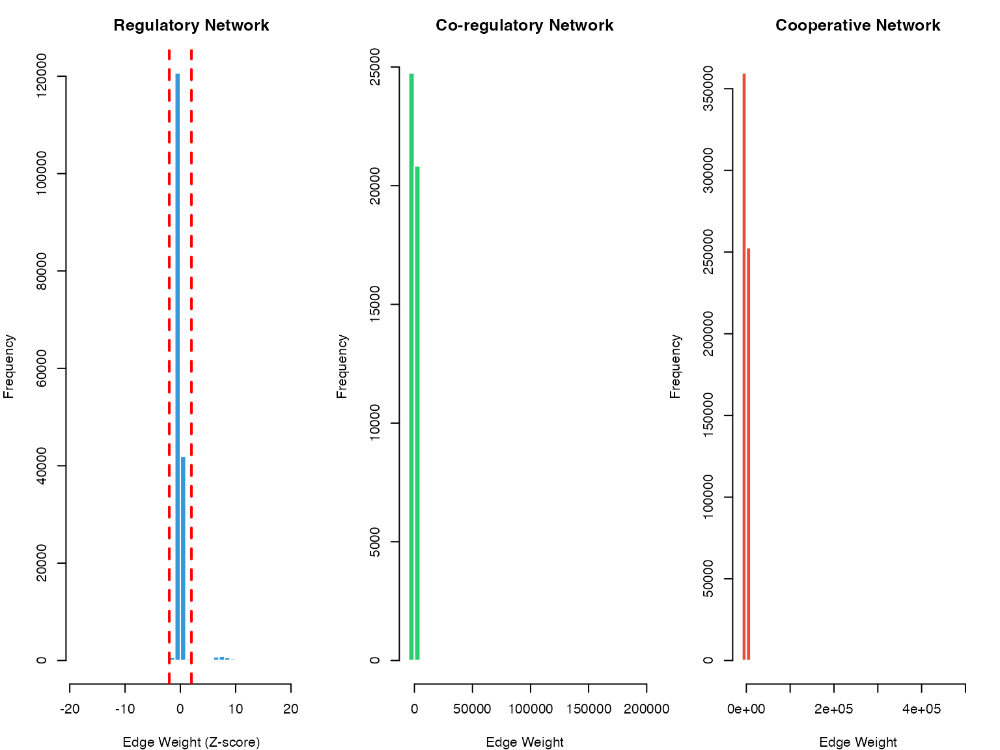
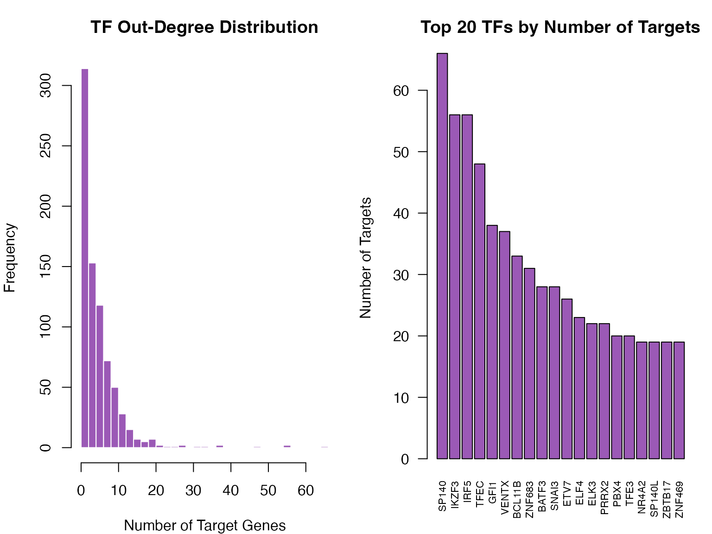
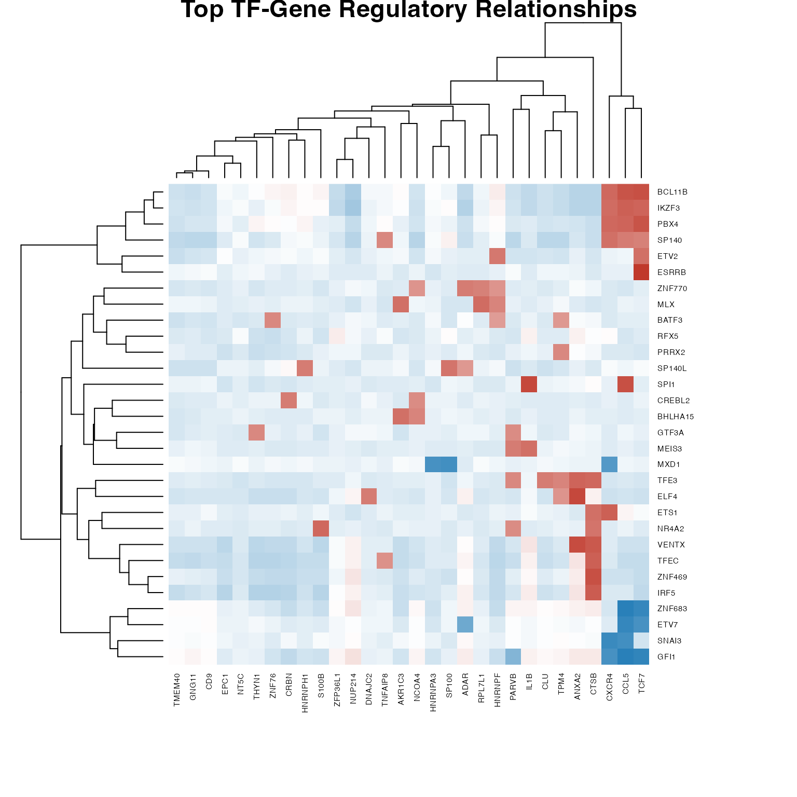
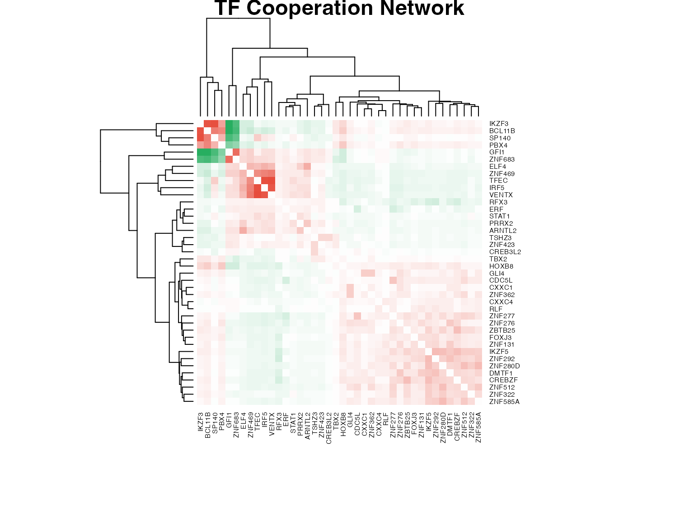
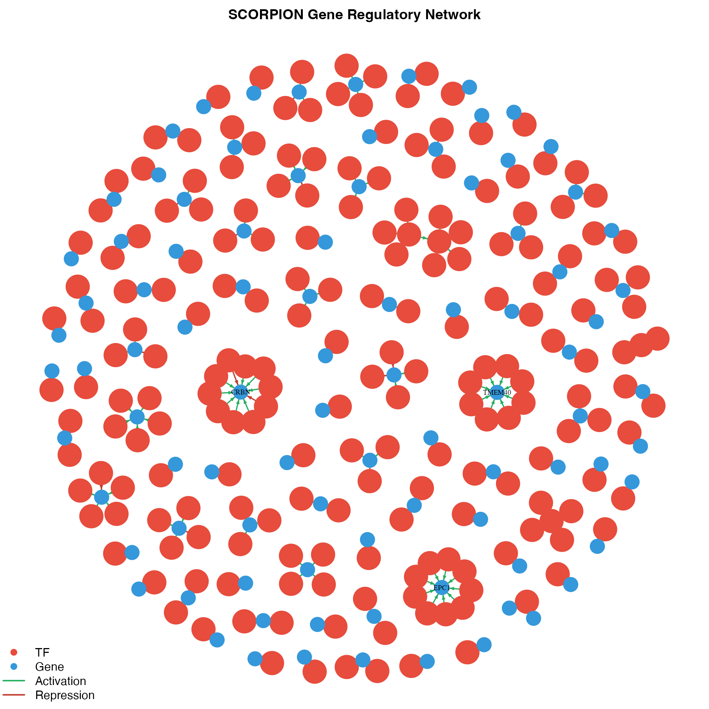
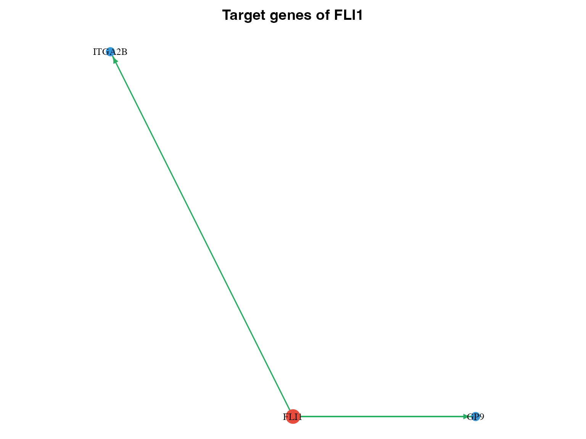
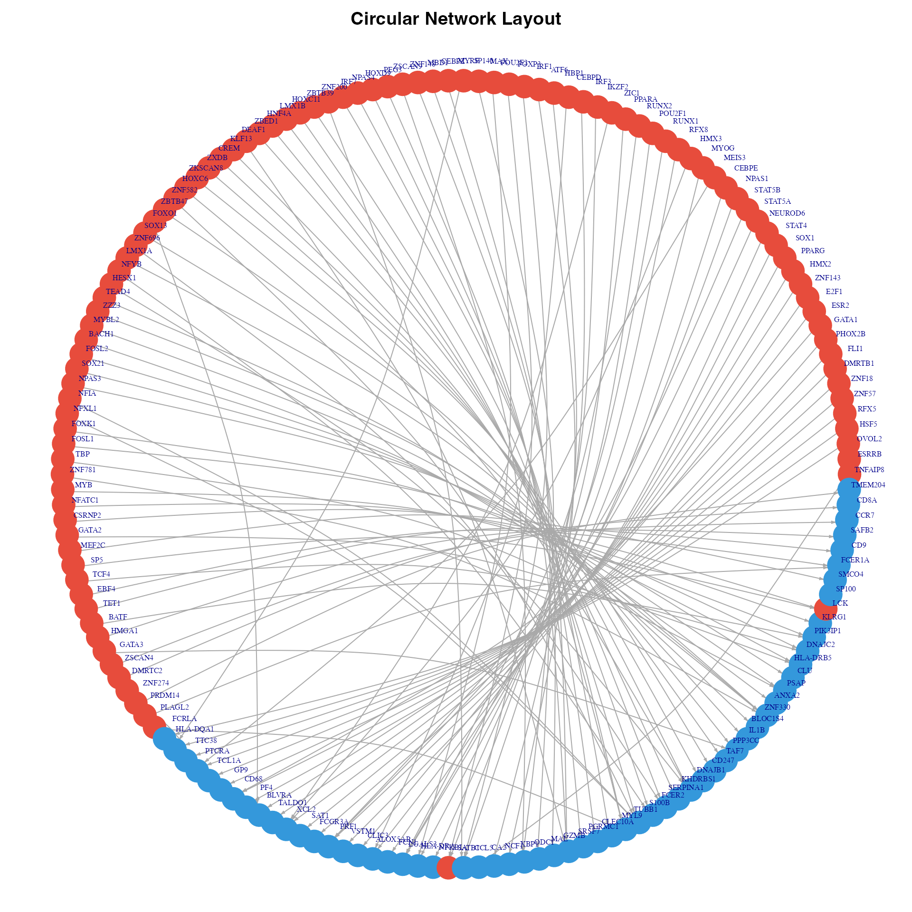
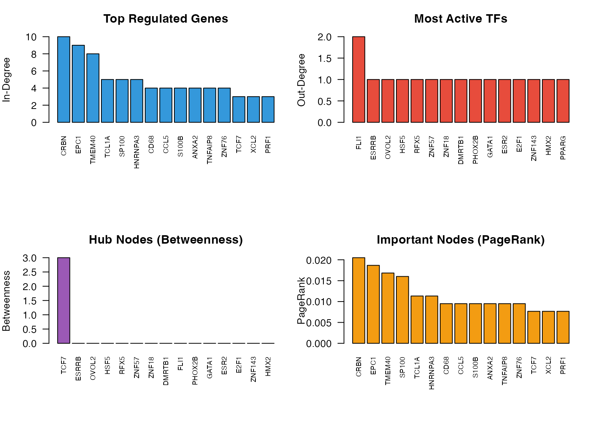

Network Visualization
Zaoqu Liu
2026-01-29
Source:vignettes/network-visualization.Rmd
network-visualization.RmdIntroduction
This vignette demonstrates various approaches for visualizing gene regulatory networks inferred by SCORPION.
Network Statistics Visualization
Edge Weight Distribution
par(mfrow = c(1, 3), mar = c(4, 4, 3, 1))
# Regulatory network
hist(as.vector(result$regNet), breaks = 50,
main = "Regulatory Network",
xlab = "Edge Weight (Z-score)",
col = "#3498db", border = "white")
abline(v = c(-2, 2), col = "red", lty = 2, lwd = 2)
# Co-regulatory network
hist(as.vector(result$coregNet), breaks = 50,
main = "Co-regulatory Network",
xlab = "Edge Weight",
col = "#2ecc71", border = "white")
# Cooperative network
hist(as.vector(result$coopNet), breaks = 50,
main = "Cooperative Network",
xlab = "Edge Weight",
col = "#e74c3c", border = "white")

Distribution of edge weights in SCORPION networks
TF Targeting Statistics
# Calculate TF out-degrees (number of targets per TF)
regNet <- result$regNet
tf_outdegree <- rowSums(abs(regNet) > 2) # Significant edges only
# Plot
par(mfrow = c(1, 2), mar = c(4, 4, 3, 1))
hist(tf_outdegree, breaks = 30,
main = "TF Out-Degree Distribution",
xlab = "Number of Target Genes",
col = "#9b59b6", border = "white")
# Top TFs by number of targets
top_tfs <- sort(tf_outdegree, decreasing = TRUE)[1:20]
barplot(top_tfs, las = 2, col = "#9b59b6",
main = "Top 20 TFs by Number of Targets",
ylab = "Number of Targets", cex.names = 0.7)

Distribution of TF out-degrees
Heatmap Visualization
Regulatory Network Heatmap
# Select top TFs and genes for visualization
top_n <- 30
# Top TFs by variance
tf_var <- apply(regNet, 1, var)
top_tf_idx <- order(tf_var, decreasing = TRUE)[1:top_n]
# Top genes by variance
gene_var <- apply(regNet, 2, var)
top_gene_idx <- order(gene_var, decreasing = TRUE)[1:top_n]
# Subset network
subnet <- regNet[top_tf_idx, top_gene_idx]
# Create heatmap
heatmap(as.matrix(subnet),
col = colorRampPalette(c("#2980b9", "white", "#c0392b"))(100),
scale = "none",
main = "Top TF-Gene Regulatory Relationships",
margins = c(8, 8),
cexRow = 0.6, cexCol = 0.6)

Regulatory network heatmap (top TFs and genes)
TF Cooperation Heatmap
# Select top cooperating TFs
coopNet <- result$coopNet
diag(coopNet) <- 0
tf_coop_degree <- rowSums(abs(coopNet) > quantile(abs(coopNet), 0.95))
top_coop_idx <- order(tf_coop_degree, decreasing = TRUE)[1:min(40, nrow(coopNet))]
coop_subnet <- coopNet[top_coop_idx, top_coop_idx]
heatmap(as.matrix(coop_subnet),
col = colorRampPalette(c("#27ae60", "white", "#e74c3c"))(100),
scale = "none", symm = TRUE,
main = "TF Cooperation Network",
margins = c(8, 8),
cexRow = 0.6, cexCol = 0.6)

TF cooperation network heatmap
Network Graph Visualization
Building igraph Network
# Create edge list from regulatory network
threshold <- 2 # Z-score threshold
edges <- which(abs(regNet) > threshold, arr.ind = TRUE)
if(nrow(edges) > 0) {
edge_df <- data.frame(
from = rownames(regNet)[edges[,1]],
to = colnames(regNet)[edges[,2]],
weight = regNet[edges],
stringsAsFactors = FALSE
)
# Limit to top edges for visualization
edge_df <- edge_df[order(-abs(edge_df$weight)), ]
edge_df <- head(edge_df, 200)
# Create igraph object (without weight attribute for layout compatibility)
g <- graph_from_data_frame(edge_df[, c("from", "to")], directed = TRUE)
# Node attributes
V(g)$type <- ifelse(V(g)$name %in% rownames(regNet), "TF", "Gene")
V(g)$color <- ifelse(V(g)$type == "TF", "#e74c3c", "#3498db")
V(g)$size <- ifelse(V(g)$type == "TF", 8, 5)
# Edge attributes (store original weight for coloring)
E(g)$orig_weight <- edge_df$weight
E(g)$color <- ifelse(edge_df$weight > 0, "#27ae60", "#c0392b")
E(g)$width <- abs(edge_df$weight) / max(abs(edge_df$weight)) * 2 + 0.5
cat("Network has", vcount(g), "nodes and", ecount(g), "edges\n")
} else {
cat("No significant edges found with threshold =", threshold, "\n")
}
#> Network has 292 nodes and 200 edgesNetwork Layout and Plotting
if(exists("g") && vcount(g) > 0) {
# Use layout without weight dependency
set.seed(42)
layout <- layout_nicely(g)
# Plot
par(mar = c(0, 0, 2, 0))
plot(g,
layout = layout,
vertex.label = ifelse(degree(g) > 5, V(g)$name, NA),
vertex.label.cex = 0.6,
vertex.label.color = "black",
vertex.frame.color = NA,
edge.arrow.size = 0.3,
main = "SCORPION Gene Regulatory Network")
legend("bottomleft",
legend = c("TF", "Gene", "Activation", "Repression"),
col = c("#e74c3c", "#3498db", "#27ae60", "#c0392b"),
pch = c(19, 19, NA, NA),
lty = c(NA, NA, 1, 1),
lwd = 2, bty = "n")
} else {
plot.new()
text(0.5, 0.5, "No network to display", cex = 1.5)
}

Gene regulatory network visualization
Subnetwork for Specific TF
if(exists("g") && vcount(g) > 0) {
# Select a TF with many targets
tf_degrees <- degree(g, mode = "out")
tf_names <- names(tf_degrees)[tf_degrees > 0]
if(length(tf_names) > 0) {
# Select top TF
top_tf <- tf_names[which.max(tf_degrees[tf_names])]
# Get neighbors
neighbors_idx <- neighbors(g, top_tf, mode = "out")
subgraph_nodes <- c(top_tf, names(neighbors_idx))
if(length(subgraph_nodes) > 1) {
# Create subgraph
subg <- induced_subgraph(g, subgraph_nodes)
# Plot
par(mar = c(0, 0, 2, 0))
plot(subg,
layout = layout_as_star(subg, center = top_tf),
vertex.label.cex = 0.8,
vertex.label.color = "black",
vertex.frame.color = NA,
edge.arrow.size = 0.5,
main = paste("Target genes of", top_tf))
}
}
} else {
plot.new()
text(0.5, 0.5, "No network to display", cex = 1.5)
}

Subnetwork for a specific TF
Circular Network Plot
if(exists("edge_df") && nrow(edge_df) > 0) {
# Create simplified network for circular layout
edge_df_simple <- head(edge_df[order(-abs(edge_df$weight)), ], 100)
g_simple <- graph_from_data_frame(edge_df_simple, directed = TRUE)
V(g_simple)$type <- ifelse(V(g_simple)$name %in% rownames(regNet), "TF", "Gene")
V(g_simple)$color <- ifelse(V(g_simple)$type == "TF", "#e74c3c", "#3498db")
# Order nodes: TFs first, then genes
node_order <- order(V(g_simple)$type, decreasing = TRUE)
g_simple <- permute(g_simple, node_order)
# Circular layout
par(mar = c(0, 0, 2, 0))
plot(g_simple,
layout = layout_in_circle(g_simple),
vertex.size = 6,
vertex.label.cex = 0.5,
vertex.label.dist = 1,
vertex.frame.color = NA,
edge.arrow.size = 0.2,
edge.curved = 0.2,
main = "Circular Network Layout")
} else {
plot.new()
text(0.5, 0.5, "No network to display", cex = 1.5)
}

Circular network visualization
Network Centrality Analysis
if(exists("g") && vcount(g) > 0) {
# Calculate centrality measures
deg_in <- degree(g, mode = "in")
deg_out <- degree(g, mode = "out")
between <- betweenness(g)
pr <- page_rank(g)$vector
# Create summary
centrality_df <- data.frame(
Node = V(g)$name,
Type = V(g)$type,
InDegree = deg_in,
OutDegree = deg_out,
Betweenness = between,
PageRank = pr
)
# Top nodes by different measures
par(mfrow = c(2, 2), mar = c(8, 4, 3, 1))
# Top by in-degree (most regulated genes)
top_in <- head(centrality_df[order(-centrality_df$InDegree), ], 15)
if(nrow(top_in) > 0) {
barplot(top_in$InDegree, names.arg = top_in$Node, las = 2,
col = "#3498db", main = "Top Regulated Genes",
ylab = "In-Degree", cex.names = 0.7)
}
# Top by out-degree (most active TFs)
top_out <- head(centrality_df[order(-centrality_df$OutDegree), ], 15)
if(nrow(top_out) > 0) {
barplot(top_out$OutDegree, names.arg = top_out$Node, las = 2,
col = "#e74c3c", main = "Most Active TFs",
ylab = "Out-Degree", cex.names = 0.7)
}
# Top by betweenness
top_bet <- head(centrality_df[order(-centrality_df$Betweenness), ], 15)
if(nrow(top_bet) > 0) {
barplot(top_bet$Betweenness, names.arg = top_bet$Node, las = 2,
col = "#9b59b6", main = "Hub Nodes (Betweenness)",
ylab = "Betweenness", cex.names = 0.7)
}
# Top by PageRank
top_pr <- head(centrality_df[order(-centrality_df$PageRank), ], 15)
if(nrow(top_pr) > 0) {
barplot(top_pr$PageRank, names.arg = top_pr$Node, las = 2,
col = "#f39c12", main = "Important Nodes (PageRank)",
ylab = "PageRank", cex.names = 0.7)
}
} else {
par(mfrow = c(1, 1))
plot.new()
text(0.5, 0.5, "No network to display", cex = 1.5)
}

Network centrality measures
Exporting Networks
Export to Cytoscape
# Export edge list for Cytoscape
write.csv(edge_df, "scorpion_network.csv", row.names = FALSE)
# Export node attributes
node_attrs <- data.frame(
Node = c(rownames(regNet), colnames(regNet)),
Type = c(rep("TF", nrow(regNet)), rep("Gene", ncol(regNet)))
)
write.csv(node_attrs, "scorpion_nodes.csv", row.names = FALSE)Export to GraphML
# Export as GraphML for Cytoscape/Gephi
write_graph(g, "scorpion_network.graphml", format = "graphml")Summary
Key visualization approaches for SCORPION networks:
- Heatmaps: Good for showing global patterns
- Network graphs: Show topology and hub nodes
- Centrality plots: Identify key regulators
- Subnetworks: Focus on specific TFs or pathways
Session Information
sessionInfo()
#> R version 4.4.0 (2024-04-24)
#> Platform: aarch64-apple-darwin20
#> Running under: macOS 15.6.1
#>
#> Matrix products: default
#> BLAS: /Library/Frameworks/R.framework/Versions/4.4-arm64/Resources/lib/libRblas.0.dylib
#> LAPACK: /Library/Frameworks/R.framework/Versions/4.4-arm64/Resources/lib/libRlapack.dylib; LAPACK version 3.12.0
#>
#> locale:
#> [1] C
#>
#> time zone: Asia/Shanghai
#> tzcode source: internal
#>
#> attached base packages:
#> [1] stats graphics grDevices utils datasets methods base
#>
#> other attached packages:
#> [1] igraph_2.2.1 Matrix_1.7-4 SCORPION_1.2.1
#>
#> loaded via a namespace (and not attached):
#> [1] cli_3.6.5 knitr_1.51 rlang_1.1.7 xfun_0.56
#> [5] otel_0.2.0 textshaping_1.0.4 jsonlite_2.0.0 htmltools_0.5.9
#> [9] ragg_1.5.0 sass_0.4.10 rmarkdown_2.30 grid_4.4.0
#> [13] evaluate_1.0.5 jquerylib_0.1.4 fastmap_1.2.0 yaml_2.3.12
#> [17] lifecycle_1.0.5 compiler_4.4.0 irlba_2.3.5.1 fs_1.6.6
#> [21] pkgconfig_2.0.3 htmlwidgets_1.6.4 pbapply_1.7-4 systemfonts_1.3.1
#> [25] lattice_0.22-7 digest_0.6.39 R6_2.6.1 RANN_2.6.2
#> [29] parallel_4.4.0 magrittr_2.0.4 bslib_0.9.0 tools_4.4.0
#> [33] pkgdown_2.2.0 cachem_1.1.0 desc_1.4.3